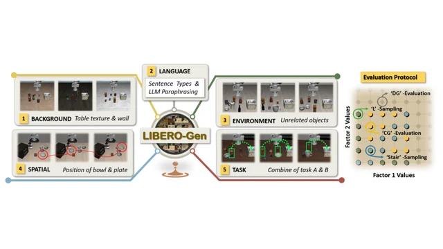

Papers & resources
Report
-
-

LIBERO-Pro: Towards Robust and Fair Evaluation of Vision-Language-Action Models Beyond Memorization
-

Dismantling the Illusion of Vision-Language-Action Models Competence via Explicit Distributional Shifts